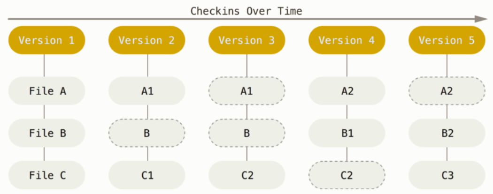
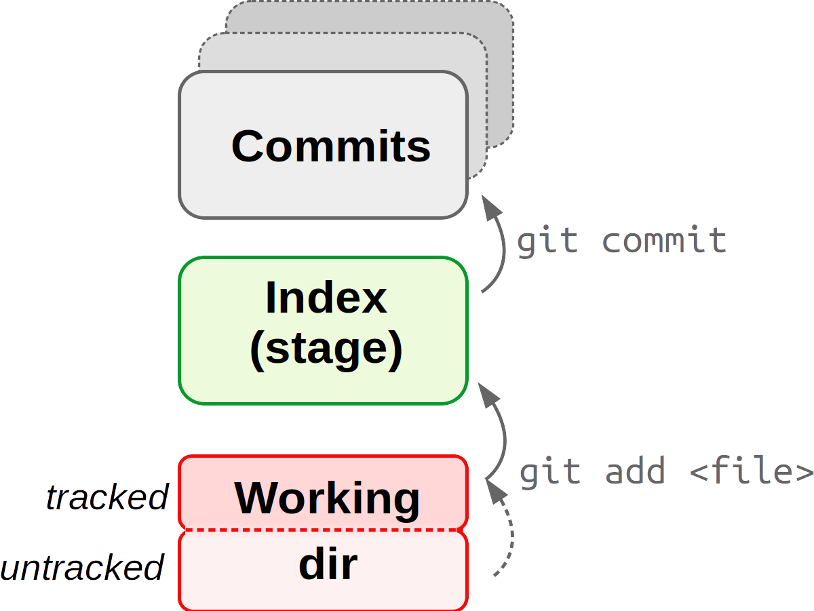
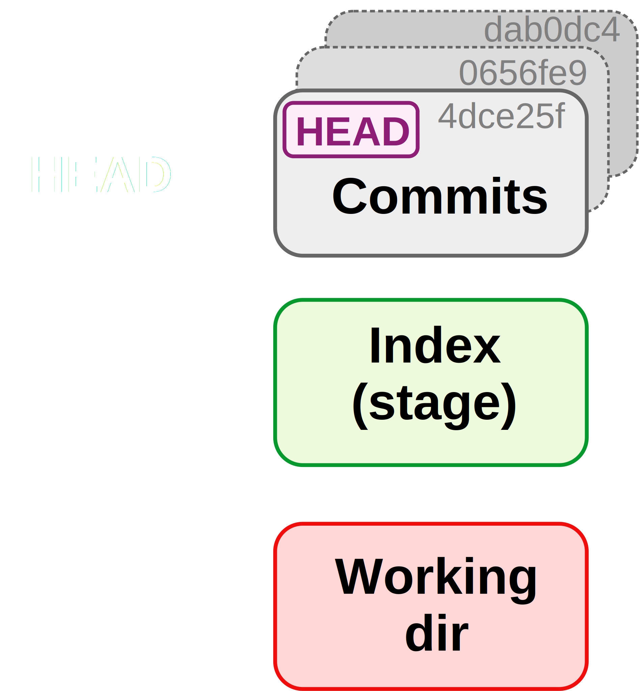
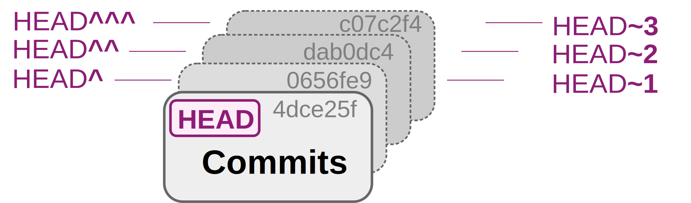
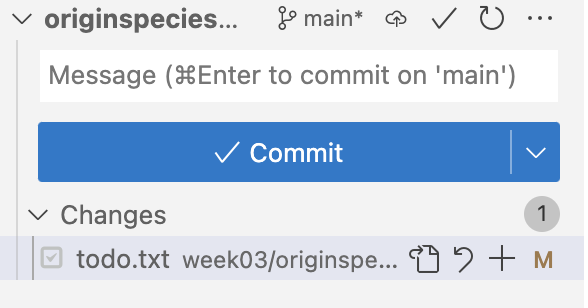
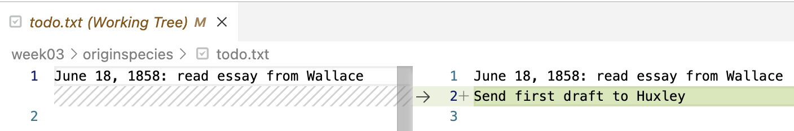

Getting started with Git
Overview of Git tutorials
In these Git tutorials, you will learn about version control with the software Git, and about using the GitHub website to host our Git repositories online.
- This page: Getting started with Git
- Remotes on GitHub
- Branching & merging, undoing committed changes, and viewing the past
Overview of this tutorial
- An introduction to version control
- The basic Git workflow and basic Git commands
- Showing changes between files
- Making Git ignore specific files and dirs
- Undoing accidental changes to your files
- Some Git best practices
1 An introduction to version control
1.1 Why use a Version Control System (VCS)?
Here are some “versioning”- and backup-related challenges for your research project files that you may run into when not using a formal Version Control System (VCS):
- What to save periodic copies of?
- Do you only save versions of individual files?
Space-efficient, but doesn’t allow you to go back to the state of other project files at the same point in time. - Do you save a copy of the full project periodically?
Better than the above option, but can become prohibitive in terms of disk storage.
- Do you only save versions of individual files?
- How to know what changes were made between saved versions?
- How to collaborate, especially when working simultaneously?
- How to restore an accidentally deleted, modified, or overwritten file? This can especially be an issue at OSC where there is no recycle bin or undo button.
- How to manage simultaneous variants of files, such as when making experimental changes?
A formal VCS can help you with these challenges. With a VCS:
- You can easily see your history of changes.
- You have a time machine: you can go back to past states of your project (and not just of individual files!).
- You can do simultaneous collaborative work — you can always track down who made which changes.
- Sharing your code and other aspects of your project is easy.
- You can make experimental changes without affecting current functionality.
Or, as the CSB book puts it:
Version control is a way to keep your scientific projects tidily organized, collaborate on science, and have the whole history of each project at your fingertips.
— CSB Chapter 2
1.2 How Git roughly works
Git is the most widely used Version Control System1. With Git, you save “snapshots” of your project with every minor piece of progress. Git manages this cleverly without having to create full copies of the project for every snapshot:

Figure from https://git-scm.com.
As illustrated above, files that haven’t changed between snapshots are not saved again and again with every snapshot. But Git doesn’t even save full copies of files that have changed: it tracks changes on a line-by-line basis, and saves changed lines (!).
Note that one Git database (repository) manages files inside a single directory structure, so to use Git, it’s important that your projects are properly organized or at least kept in separate dirs, as discussed in this tutorial.
Key Git term 1: Repository (repo)
A Git “repository” (or “repo”) is the version-control database for a project. Note that:
- You can start a Git repository in any dir on your computer.
- The Git database is saved in a hidden dir
.gitin the dir in which you started the repo. - It is typical (& recommended) that you should have one Git repository for each research project.
- You can also download any public online Git repository.
When a file or dir name has a leading ., it’s “hidden”. These don’t show up in file browsers by default, nor in ls file listings unless you use the -a (“all”) option. Hidden files and dirs are often generated automatically by software.
Key Git term 2: Commit
A Git “commit” is a saved snapshot of the project. For now, note that:
- It is always possible to go the exact state of the entire project or individual files for any commit.
- Whenever you create a commit, you also include a message describing the changes you made.
1.3 What do I put under version control?
The primary files to put under version control are:
- Scripts2.
- Project documentation files.
- Metadata.
- Manuscripts, if you write them in a plain text format.
What about data and results?
- Raw data may or may not be included — for omics data, this is generally not feasible due to large file sizes.
- Results from analyses should generally not be included.
Source versus derived files
The general idea behind what you should and should not include is that you should version-control the source, but not derived files. For instance:
- Version-control your Markdown file, not the HTML it produces.
- Version-control your script, not the output it produces.
Recall that results and other derived files are (or should be) dispensable, because they can be regenerated using the raw data and the scripts.
File limitations
There are some limitations to the types and sizes of files that can be committed with Git:
- File type: binary (non-text) files, such a Word or Excel files, or compiled software, can be included but can’t be tracked in quite the same way as plain-text files3.
- Repository size: for performance reasons, it’s best to keep individual repositories under about 1 GB.
- File size: while you can have them in your Git repo, GitHub will not allow you to upload files >100 MB.
As such, omics data is usually too large to be version-controlled. To make your data available to others, you can use dedicated repositories like the NCBI’s Sequence Read Archive (SRA).
1.4 User Interfaces for Git

You can work with Git in several different ways — using:
- The native command-line interface (CLI).
- Third-party graphical user interfaces (GUIs) such as Git Kraken.
- IDEs/editors with Git integration like RStudio and VS Code.
In this course, we will mainly focus on the CLI because it’s the most universal and powerful interface. But it’s absolutely fine to switch to GUI usage later, which will not be hard if you’ve learned the basics with the CLI.
Git takes some getting used to, regardless of the interface. Many people have one or more “false starts” with it. I hope that being “forced” to use it in a course4 will take you past that!
2 The basic Git workflow
Git commands always start with git followed by a second command/subcommand or “verb”: git add, git commit, etc. Only three commands tend to make up the vast majority of your Git work:
git adddoes two things:
- Start “tracking” files (i.e., files in your directory structure are not automatically included in the repo).
- Mark changed/new files as ready to be committed, which is called “staging” files.
git commit
Create a new snapshot of the project by commiting all currently staged files (changes).git status
Get the status of your repo: which files have changed, which new files are present, tips on next steps, etc.

The Git database, which is in a hidden folder
.git, is depicted with a gray background.
Note that
git add has a dual function: it starts tracking files and stages them.3 Getting set up
We will start with loading Git at OSC5 and then do some one-time personal Git configuration:
Launch VS Code at https://ondemand.osc.edu as before, at the dir
/fs/ess/PAS2700/users/$USER, and open a terminal in VS Code.“Load” the most recent version of Git that is available at OSC with the
module loadcommand6:module load git/2.39.0Use
git configto make your (actual, not user) name known to Git:git config --global user.name 'John Doe'Use
git configto make your email address known (use the same email address you signed up for GitHub with):git config --global user.email 'doe.391@osu.edu'Use
git configto set a default text editor for Git.
(Occasionally7, Git will open up a text editor for you. Even though we’re using VS Code, here it is better to select a text editor that runs directly in the shell, likenano.)git config --global core.editor "nano -w"Activate Git output with colors:
git config --global color.ui trueChange the default “branch” name to
main:git config --global init.defaultbranch mainCheck whether you successfully changed the settings:
git config --global --list# user.name=John Doe # user.email=doe.39@osu.edu # colour.ui=true # core.editor=nano -w # init.defaultbranch=main
4 Your first Git repository
You’ll create a Git repository for a mock book project: writing Charles Darwin’s “On the Origin of Species”.
4.1 Start a new Git repository
Create a new dir for a mock project that we will version-control with Git, and move there:
# Before starting, you should be in /fs/PAS2700/users/$USER, cd there first if needed
mkdir -p week03/originspecies
cd week03/originspeciesThe command to initialize a new Git repository is git init — use that to start a repo for the originspecies dir:
git initInitialized empty Git repository in /fs/ess/PAS2700/users/jelmer/week03/originspecies/.git/Can we confirm that the Git repo dir is there?
# The -a option to ls will also show hidden files
ls -a. .. .gitNext, check the status of your new repository with git status:
git statusOn branch main
No commits yet
nothing to commit (create/copy files and use "git add" to track)Git reports that you:
- Are on a “branch” that is called ‘main’. We won’t talk about Git branches in class, but this is discussed in the optional self-study material and CSB Chapter 2.6. Basically, these are “parallel versions” of your repository.
- Have not created any commits yet.
- Have “nothing to commit” because there are no files in this dir.
4.2 Your first Git commit
You will start writing the book (😉) by echo-ing some text into a new file called origin.txt:
echo "An Abstract of an Essay on ..." > origin.txtNow, check the status of the repository again:
git statusOn branch main
No commits yet
Untracked files:
(use "git add <file>..." to include in what will be committed)
origin.txt
nothing added to commit but untracked files present (use "git add" to track)Git has clearly detected the new file. But as mentioned, Git does not automatically start “tracking” files, which is to say it won’t automatically include files in the repository. Instead, it tells you the file is “Untracked” and gives a hint on how to add it to the repository.
So, start tracking the file and stage it all at once with git add:
# (Note that tab-completion on file names will work here, too)
git add origin.txtCheck the status of the repo again:
git statusOn branch main
No commits yet
Changes to be committed:
(use "git rm --cached <file>..." to unstage)
new file: origin.txtNow, your file has been added to the staging area (also called the Index) and is listed as a “change to be committed”8. This means that if you now run git commit, the file would be included in that commit.
So, with your file tracked & staged, let’s make your first commit. Note that you must add the option -m followed by a “commit message”: a short description of the changes you are including in the current commit.
# We use the commit message (option '-m') "Started the book" to describe our commit
git commit -m "Started the book"[main (root-commit) 3df4361] Started the book
1 file changed, 1 insertion(+)
create mode 100644 origin.txtNow that you’ve made your first Git commit, check the status of the repo again:
git statusOn branch main
nothing to commit, working tree cleangit status a lot — as a sanity check before and after other git actions.
Also look at the commit history of the repo with git log:
git logcommit 3df4361c1de9b71e08bf6e050105d53097acec21 (HEAD -> main)
Author: Jelmer Poelstra <jelmerpoelstra@gmail.com>
Date: Mon Mar 11 10:55:35 2024 -0400
Started the bookNote the “hexadecimal code” (using numbers and the letters a-f) on the first line — this is a unique identifier for each commit, called the SHA-1 checksum. You can reference and access each past commit with these checksums.
4.3 Your second commit
Start by modifying the book file — you’ll actually overwrite the earlier content:
echo "On the Origin of Species" > origin.txtCheck the status of the repo:
git statusChanges not staged for commit:
(use "git add <file>..." to update what will be committed)
(use "git restore <file>..." to discard changes in working directory)
modified: origin.txt
no changes added to commit (use "git add" and/or "git commit -a")Git has noticed the changes, because the file is being tracked: origin.txt is listed as “modified”. But changes to tracked files aren’t automatically staged — use git add to stage the file as a first step to committing these changes:
git add origin.txtNow, make your second commit:
git commit -m "Changed the title as suggested by Murray"[main f106353] Changed the title as suggested by Murray
1 file changed, 1 insertion(+), 1 deletion(-)Git gives a brief summary of the changes that were made: you changed 1 file (origin.txt), and since you replaced the line of text in that file, it is interpreting that as 1 insertion (the new line) and 1 deletion (the removed/replace line).
Check the history of the repo again — you’ll see that there are now 2 commits:
git logcommit f1063537b6a1e0d87d2d52c9e96c38694959997a (HEAD -> main)
Author: Jelmer Poelstra <jelmerpoelstra@gmail.com>
Date: Mon Mar 11 11:01:49 2024 -0400
Changed the title as suggested by Murray
commit 3df4361c1de9b71e08bf6e050105d53097acec21
Author: Jelmer Poelstra <jelmerpoelstra@gmail.com>
Date: Mon Mar 11 10:55:35 2024 -0400
Started the bookAs you start accumulating commits, you might prefer git log --oneline for a one-line-per-commit summary:
git log --oneline1e2bba4 Changed the title as suggested by Murray
4fd04af Started the bookWhen you have multiple files that you would like to stage, you don’t need to add them one-by-one:
# NOTE: Don't run any of this - these are hypothetical examples
# Stage all files in the project (either option works):
git add --all
git add *
# Stage all files in a specific dir (here: 'scripts') in the project:
git add scripts/*
# Stage all shell scripts *anywhere* in the project:
git add *sh Finally, you can use the -a option for git commit as a shortcut to stage and commit all changes with a single command (but note that this will not add untracked files):
# Stage & commit all tracked files:
git commit -am "My commit message"4.4 What to include in individual commits
The last example in the box above showed the -a option to git commit, which allows you to at once stage & commit all changes since the last commit. That seems more convenient than separately git adding files before committing.
However, it’s good practice not to simply and only commit, say, at the end of each day, but instead to try and create commits for units of progress worth saving and as such create separate commits for distinct changes.
For example, let’s say that you use git status to check which files you’ve changed since your last commit, and you find that you have:
- Updated a README file to include more information about your samples.
- Worked on a script to run quality control of sequence files.
These are completely unrelated changes, and it would not be recommended to include both in a single commit.
Exercise (CSB Intermezzo 2.1)
- Create a new file
todo.txtcontaining the line: “June 18, 1858: read essay from Wallace”.
Click to see the solution
echo "June 18, 1858: read essay from Wallace" > todo.txt- Use a Git command to stage the file.
Click to see the solution
git add todo.txt- Create a Git commit with the commit message “Added to-do list”.
Click to see the solution
git commit -m "Added to-do list"5 File states and showing changes
5.1 File states (and Git’s three “trees”)
Tracked files can be in one of three states:
- Unchanged since the last commit: committed (latest version is in the repo/commits).
- Modified and staged since the last commit: staged (latest version is in the Index).
- Modified but not staged since the last commit: modified (latest version is in the working dir).
These three states correspond to the three “trees” of Git:
- HEAD: State of the project in the most recent commit9.
- Index (Stage): State of the project ready to be committed.
- Working directory (Working Tree): State of the project as currently on your computer.

The hexadecimals in the Commits rectangles are abbreviated checksums for each commit.
Or consider this table for a hypothetical example in which HEAD, the Index, and the working dir all differ with regards to the the version of file 1, and there also is an untracked file in the working dir:
| File state | Version | Which tree |
|---|---|---|
| Committed | file 1 version X | HEAD |
| Staged | file 1 version Y | Index (stage) |
| Modified | file 1 version Z | Working dir |
| Untracked | file 2 version X | Working dir |
To refer to specific past commits, you can:
- Using the hexadecimal checksum (either the full ID or the 7-character abbreviation)
- Use HEAD notation: HEAD is the most recent commit, and there are two ways of indicating ancestors of HEAD:

dab0dc4 for the second-to-last commit)or HEAD notation (
HEAD^^ or HEAD~2 for the second-to-last commit).5.2 Showing changes
You can use the git diff command to show changes that you have made. By default, it will show all changes between the working dir and:
- The last commit if nothing has been staged.
- The stage (Index) if something has been staged.
Note that when I talk about the “working dir” in the context of Git, I mean not just your top-level project/repository directory, or any specific dir within there that you may have cd-ed into, but the entire project/repository directory hierarchy.
It is mainly used to distinguish the state of your project on your computer (“working dir”) versus that in the repository (“index” and “commits”), and should technically be referred to as the “working dir tree”.
Right now, there are no differences to report in our originspecies repository, because our working dir, the stage/Index, and the last commit are all the same:
# Git diff will not have output if there are no changes to report
git diffChange the to-do list (note: for this to work, you should have done the exercise above!), and check again:
echo "June 20, 1858: Send first draft to Huxley" >> todo.txt
git diffdiff --git a/todo.txt b/todo.txt
index e3b5e55..9aca508 100644
--- a/todo.txt
+++ b/todo.txt
@@ -1 +1,2 @@
June 18, 1858: read essay from Wallace
+June 20, 1858: Send first draft to HuxleyWe won’t go into the details of the above “diff format”, but at the bottom of the output above, you can see some specific changes: the line “Send first draft to Huxley” was added (hence the + sign) in our latest version of the file.
- Click on the Git symbol in the narrow side bar (below the search icon) to open the Source Control side bar.
- In the source control sidebar, you should see not just the
originspeciesrepository listed, but also theCSBrepo10. If needed, click onoriginspeciesto expand it:

- Within the
originspecieslisting, you should seetodo.txt: click on theMnext to the filetodo.txt, and the following should appear in your editor pane:

That’s a much more intuitive overview that makes it clear which line was added.
git diff (Click to expand)
To show changes between the Index (stage) and the last commit, use the
--stagedoption togit diff.If you have changed multiple files, but just want to see differences for one of them, you can specify the filename — in our case here, that will give the same output as the plain
git diffcommand above, since we only changed one file:git diff todo.txt # Output not shown, same as aboveYou can also compare your repo or individual files between any two arbitrary commits (for the HEAD notation, see the boxes on the “three trees” of Git above.):
# Last commit vs second-to-last commit - full repo: git diff HEAD HEAD^ # Last commit vs a specified commit - specific file: git diff HEAD d715c54 todo.txt
Exercise: another commit
Stage and commit the changes to todo.txt, then check what you have done.
Click to see the solution
Stage the file:
git add todo.txtCommit:
git commit -m "Update the TODO list"[main 8ec8103] Update the TODO list 1 file changed, 1 insertion(+)Check the log:
git logcommit 8ec8103e8d01b342f9470908b87f0649be53edd5 Author: Jelmer Poelstra <jelmerpoelstra@gmail.com> Date: Mon Mar 11 12:30:35 2024 -0400 Update the TODO list commit 9715ab5325429526a90ea49e9d40a923c93ccb72 Author: Jelmer Poelstra <jelmerpoelstra@gmail.com> Date: Mon Mar 11 11:37:32 2024 -0400 Added a gitignore file commit 603d1792619bf628d66cd91a45cd7114e3d6b95b Author: Jelmer Poelstra <jelmerpoelstra@gmail.com> Date: Mon Mar 11 11:21:36 2024 -0400 Added to-do list commit f1063537b6a1e0d87d2d52c9e96c38694959997a Author: Jelmer Poelstra <jelmerpoelstra@gmail.com> Date: Mon Mar 11 11:01:49 2024 -0400 Changed the title as suggested by Murray commit 3df4361c1de9b71e08bf6e050105d53097acec21 Author: Jelmer Poelstra <jelmerpoelstra@gmail.com> Date: Mon Mar 11 10:55:35 2024 -0400 Started the book
6 Ignoring files and directories
As discussed above, it’s best not to track some files, such as very bulky data files, temporary files, and results.
We’ve seen that Git will notice and report any “untracked” files in your project whenever you run git status. This can get annoying and can make it harder to spot changes and untracked files that you do want to add — and you might even accidentally start tracking these files such as with git add --all.
To deal with this, you can tell Git not to pay attention to certain files by adding file names and wildcard selections to a .gitignore file. This way, these files won’t be listed as untracked files when you run git status, and they wouldn’t be added even when you use git add --all.
To see this in action, let’s start by adding some content that we don’t want to commit to our repository: a dir data, and a file ending in a ~ (a temporary file type that e.g. text editors can produce):
mkdir data
touch data/drawings_1855-{01..12} todo.txt~When we check the status of the repo, we can see that Git has noticed these files:
git statusUntracked files:
(use "git add <file>..." to include in what will be committed)
data/
todo.txt~If we don’t do anything about this, Git will keep reporting these untracked files whenever we run git status. To prevent this, we will we create a .gitignore file:
- This file should be in the project’s root dir and should be called
.gitignore. .gitignoreis a plain text file that contains dir and file names/patterns, all of which will be ignored by Git.- As soon as such a file exists, Git will automatically check and process its contents.
- It’s a good idea add and commit this file to the repo.
We will create our .gitignore file and add the following to it to instruct Git to ignore everything in the data/ dir, and any file that ends in a ~:
echo "data/" > .gitignore
echo "*~" >> .gitignorecat .gitignoredata/
*~When we check the status again, Git will have automatically processed the contents of the .gitignore file, and the files we want to ignore should no longer be listed as untracked files:
git statusUntracked files:
(use "git add <file>..." to include in what will be committed)
.gitignoreHowever, we do now have an untracked .gitignore file, and we should track and commit this file:
git add .gitignore
git commit -m "Added a gitignore file"[main 9715ab5] Added a gitignore file
1 file changed, 2 insertions(+)
create mode 100644 .gitignoreGood project file organization can make your life with Git a lot easier. This is especially true when it comes to files that you want to ignore.
Since you’ll generally want to ignore data and results files, if you keep all of those in their own top-level directories, it will be easy and not error-prone to tell Git to ignore them. But if you were -for example- mixing scripts and either results or data within dirs, it would be much harder to keep this straight.
7 Moving and removing tracked files
When wanting to remove, move, or rename files that are tracked by Git, it is good practice to preface regular rm and mv commands with git: so, git rm <file> and git mv <source> <dest>.
When removing or moving/renaming a tracked file with git rm / git mv, changes will be made to your working dir just like with a regular rm/mv, and the operation will also be staged. For example:
# (NOTE: Don't run this, hypothetical examples)
git rm file-to-remove.txt
git mv myoldname.txt mynewname.txt
git statusOn branch main
Changes to be committed:
(use "git restore --staged <file>..." to unstage)
renamed: myoldname.txt -> mynewname.txt
deleted: file-to-remove.txtgit rm/git mv? (Click to expand)
It is inevitable that you will occasionally forget about this and e.g. use rm instead of git rm. Fortunately, Git will eventually figure out what happened. For example:
For a renamed file, Git will first be confused and register both a removed file and an added file:
# (Don't run this, this is a hypothetical example) mv myoldname.txt mynewname.txt git statusOn branch main Changes not staged for commit: (use "git add/rm <file>..." to update what will be committed) (use "git restore <file>..." to discard changes in working directory) deleted: myoldname.txt Untracked files: (use "git add <file>..." to include in what will be committed) mynewname.txtBut after you stage both changes (the new file and the deleted file), Git realizes it was renamed instead:
git add myoldname.txt git add mynewname.txt git statusOn branch main Changes to be committed: (use "git restore --staged <file>..." to unstage) renamed: myoldname.txt -> mynewname.txt
So, there is no need to stress if you forget this, but when you remember, use git mv and git rm.
Exercises: .gitignore and git rm
A) Create a new directory results with files Galapagos.txt and Ascencion.txt. Add a line to the .gitignore file to ignore these results, and commit the changes to the .gitignore file.
Click to see the solution
Create the dir and files:
mkdir results touch results/Galapagos.txt results/Ascencion.txtOptional - check that they are detected by Git (note: only the dir will be shown, not its contents):
git statusOn branch main Untracked files: (use "git add <file>..." to include in what will be committed) results/ nothing added to commit but untracked files present (use "git add" to trackAdd the string “results/” to the
.gitignorefile:echo "results/" >> .gitignoreOptional - check the status again:
git statusOn branch main Changes not staged for commit: (use "git add <file>..." to update what will be committed) (use "git restore <file>..." to discard changes in working directory) modified: .gitignore no changes added to commit (use "git add" and/or "git commit -a")Looks good,
results/is no longer listed. But we do need to commit the changes to.gitignore.Commit the changes to
.gitignore:git add .gitignore git commit -m "Add results dir to gitignore"[main 33b6576] Add results dir to gitignore 1 file changed, 1 insertion(+)
B) Create and commit an empty new file notes.txt. Then, remove it with git rm and commit your file removal.
Click to see the solution
Create the file and add and commit it:
touch notes.txt git add notes.txt git commit -m "Add notes"[main 44a37f9] Add notes 1 file changed, 0 insertions(+), 0 deletions(-) create mode 100644 notes.txtOptional - check that the file is there:
lsdata notes.txt origin.txt README.md todo.txt todo.txt~Remove the file with
git rmand commit the removal:git rm notes.txt git commit -m "These notes were made in error"[main 058fd47] These notes were made in error 1 file changed, 0 insertions(+), 0 deletions(-) delete mode 100644 notes.txtOptional - check that the file is no longer there:
lsdata origin.txt README.md todo.txt todo.txt~
8 Undoing changes that have not been committed
Here, you’ll learn how to undo changes that have not been committed, like undoing an accidental file removal or overwrite. (In the optional self-study Git material, there is a section on undoing changes that have been committed.)
8.1 Recovering a version from the repo
We’ll practice with undoing changes to your working dir (that have not been staged) by recovering a version from the repo: in other words, using Git as an “undo button” after accidental file changes or removal.
Let’s say you accidentally overwrote instead of appended to a file:
echo "Finish the taxidermy of the finches from Galapagos" > todo.txtAlways start by checking the status:
git statusOn branch main Changes not staged for commit: (use "git add <file>..." to update what will be committed) (use "git restore <file>..." to discard changes in working directory) modified: todo.txt no changes added to commit (use "git add" and/or "git commit -a")You’ll want to “discard changes in working directory”, and Git told you how to do this — with
git restore:git restore todo.txt
If you accidentally deleted a file, you can similarly retrieve it with git checkout:
Accidental removal of
todo.txtrm todo.txtUse
git restoreto get the file back!git restore todo.txt
git checkout (Click to expand)
Until recently, this action used to be done with with the git checkout command, for example:
git checkout -- README.mdgit restore is a relatively new command designed to avoid confusion with the git checkout and git reset commands, which have multiple functions. The CSB book still uses the git checkout command for a similar example11.
8.2 Unstaging a file
git restore can also unstage a file, which is most often needed when you added a file that was not supposed to be part of the next commit. For example:
You modify two files and use
git add --all:echo "Variation under domestication" >> origin.txt echo "Prepare for the next journey" >> todo.txt git add --allThen you realize that those two file changes should be part of separate commits. Again, check the status first:
git statusOn branch main Changes to be committed: (use "git restore --staged <file>..." to unstage) modified: origin.txt modified: todo.txtAnd use
git restore --stagedas suggested by Git:git restore --staged todo.txt git statusOn branch main Changes to be committed: (use "git restore --staged <file>..." to unstage) modified: origin.txt Changes not staged for commit: (use "git add <file>..." to update what will be committed) (use "git restore <file>..." to discard changes in working directory) modified: todo.txt
Now, you can go ahead and add these changes to separate commits: see the exercise below.
(Finally: in case you merely staged a file prematurely, you can just continue editing the file and re-add it.)
git reset (Click to expand)
Like with discarding changes in the working dir, this action used to be done with another command, this time git reset. For example:
git reset HEAD README.mdThe CSB book uses this but note that there is a mistake in the book: git reset will only unstage and not revert the file back to its state at the last commit. (git reset --hard does revert things back to the state of a desired commit, but only works on commits and not individual files.)
Exercise: Commit the changes 1-by-1
- Commit the currently staged changes to
origin.txt. - Stage and commit the changes to
todo.txt.
Click for the solution
Commit the currently staged changes to
origin.txt.git commit -m "Start writing about artificial selection"Stage and commit the changes to
todo.txt.git add todo.txt git commit -m "Update the TODO file"
What if you had made mistaken changes (like an accidental deletion) and also staged those changes? You can simply follow both of the two steps described above in order:
- First unstage the file with
git restore --staged <file>. - Then discard changes in the working dir with
git restore <file>.
For instance, you overwrote the contents of the book and then staged the misshapen file:
echo "Instincts of the Cuckoo" > origin.txt
git add origin.txt
cat origin.txtInstincts of the CuckooYou can undo all of this as follows:
git restore --staged origin.txt
git restore origin.txt
cat origin.txtOn the Origin of Species
Variation under domestication9 Some Git best-practices
- Write informative commit messages.
Imagine looking back at your project in a few months, after finding an error that you introduced a while ago.- Not-so-good commit message: “Updated file”
- Good commit message: “In file x, updated function y to include z”

It is often argued that commit messages should preferably be in the form of completing the sentence “This commit will…”: When adhering to this, the above commit message would instead say “In file x, update function y to include z.”.
Commit often, using small commits.
This will also help to keep commit messages informative!Before committing, check what you’ve changed.
Usegit diff [--staged]or VS Code functionality.Avoid including unrelated changes in commits.
Separate commits if your working dir contains work from disparate edits: usegit add+git commitseparately for two sets of files.Don’t commit unnecessary files.
These can also lead to conflicts — especially automatically generated, temporary files.
If you have a repo with general scripts, which you continue to develop and use in multiple projects, and you publish a paper in which you use these scripts, it is a good idea to add a “tag” to a commit to mark the version of the scripts used in your analysis:
git tag -a v1.2.0 -m "Clever release title"
git push --follow-tagsFootnotes
Others include SVN and Mercurial.↩︎
And if you’re writing software, all its source code.↩︎
Git will just save an entirely new version whenever there’s been a change rather than tracking changes in individual lines.↩︎
E.g., you’ll have to use Git for you final project.↩︎
It is available by default, but that’s a very ancient version.↩︎
You can learn more about “loading” (and installing) software at OSC in this tutorial↩︎
When you need to provide Git with a “commit message” to Git and you haven’t entered one on the command line.↩︎
You also get a hint on how to “unstage” the file: i.e., reverting what you just did with
git addand leaving the file untracked once again↩︎On the current “branch” – see the optional self-study page or CSB chapter 2.6 to learn about branches.↩︎
This is because our VS Code working dir is not
originspeciesbut two levels up from there. Typically, your VS Code working dir should be your project dir which would be the same as the repo dir.↩︎In that example, the CSB book example omits the dashes
--. These indicate that the checkout command should operate on a file, but since the file name is provided too, this is not strictly necessary.↩︎